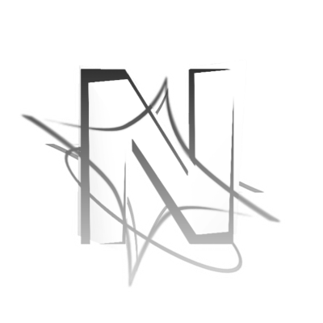

DANZGAME Presents..
DANZGAME Presents..
Nova UI Texture Packs
A collection of high-quality texture packs for Geometry Dash. Easy installation via the Geode mod loader — free, safe, and without damaging the original game files.

Nova UI
A name derived from innovation — the act of developing new ideas in a field. Nova UI is a Geometry Dash texture pack that transforms the in-game menu into something visually striking and modern, powered by the Geode mod loader.
-
ShadersMellow Voronoi on Shadertoy
-
Background
-
Player BG
-
Editor Asset
-
Logo
What is Geode?
Geode is an open-source mod loader for Geometry Dash that lets you install mods, texture packs, and custom content without modifying the original game files. Developed by the community, Geode has become the new standard for GD modding, replacing older methods that risked breaking the game.
System Requirements
Geode Pack vs Old Pack Method
Why are Geode texture packs better than the old method of replacing files in the Resources folder?
- Overwrites original game files
- Breaks when GD updates
- Requires manual backups
- Can't toggle on/off
- Conflicts between packs
- Separate files, game stays safe
- Unaffected by updates
- Automatically isolated
- Instant toggle on/off
- Minimal conflicts
Frequently Asked Questions
No. Geode only modifies the game locally on your machine. As long as you don't use hacks/cheats (like speedhack, noclip, star hack), you won't be banned. Texture packs are completely safe because they only change visual appearance without affecting gameplay.
Yes, very easily. Just delete the geode/ folder in your Geometry Dash directory, then in Steam right-click GD → Properties → Installed Files → "Verify Integrity of Game Files". The game will return to its original state 100%, as if Geode was never installed.
Geode packs don't overwrite original game files. All pack files are stored separately in the geode/mods/ folder. You can toggle on/off anytime without restarting, no manual backups needed, and they don't break when the game updates. Old packs (that replace files in the Resources folder) are no longer recommended and can cause issues.
Yes! Contact the respective pack creator through GitHub or their social media. For DANZGAME packs, reach out via the GitHub repository linked on the pack download page.
Yes, 100% free. All texture packs on this page can be downloaded without any cost. Geode itself is also open-source and free. No paywalls, no ads, no hidden fees.
You need to create a folder with a valid Geode mod structure (including mod.json), replace sprite textures as you wish, and follow the format specified by the Geode SDK. Full documentation is available at docs.geode-sdk.org. Tools like texture unpackers can help extract original GD sprites.